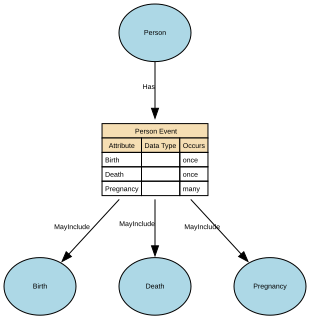

Person Event
An occurrence or change in circumstance that happens to a specific Natural Person at a point in time (or over a period of time) and is relevant to business processes, reporting, or understanding that person’s history. It captures something that happens to or is experienced by the person, rather than a role or relationship they hold.
Implements Concepts from Person Domain, Concept Model
| Concept | Description |
|---|---|
| Person Event | An occurrence or change in circumstance that happens to a specific Natural Person at a point in time (or over a period of time) and is relevant to business processes, reporting, or understanding that person’s history. It captures something that happens to or is experienced by the person, rather than a role or relationship they hold. |

Attributes
| Attribute | Description | Data type | Occurs |
|---|---|---|---|
| Birth | structure | once | |
| Death | structure | once | |
| Pregnancy | structure | many |